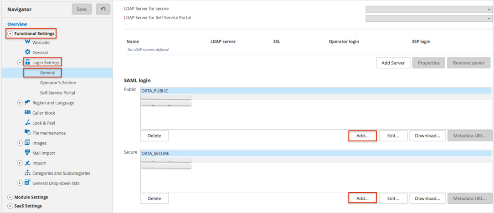
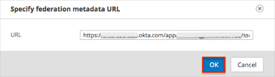
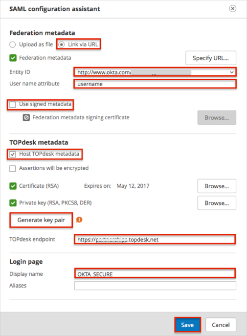
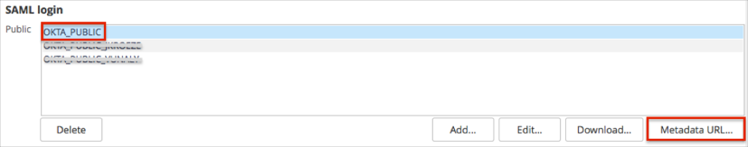
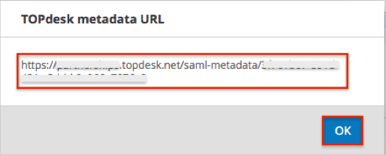
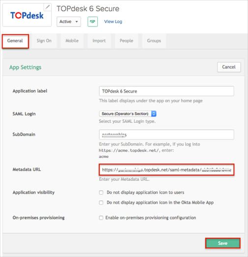

Login to TOPdesk as an administrator.
Navigate to Settings > Functional Settings > Login Settings > General.
Scroll down to the SAML login section, then click the Add button to create a SAML 2.0 setup for the public (Self Service Desk) or secure (Operator’s Section) realm:

The SAML configuration assistant window appears. Enter the following (see screen shot at end of section for reference):
In the Federation metadata section:
Select the Link via URL radio button, copy and paste the following metadata URL into the URL field, then click OK:
Sign in to the Okta Admin app to have this variable generated for you

Select Entity ID from the dropdown menu.
For User name attribute, enter username.
Uncheck Use signed metadata.
In the TOPdesk metadata section:
Check TOPdesk metadata.
Uncheck Assertions will be encrypted.
Click the Generate key pair button.
For TOPdesk endpoint, enter the hostname of the TOPdesk server.
In the Login page section:
For Display name, enter OKTA_Public for the public (Self Service Desk), or OKTA_SECURE for secure (Operator’s Section) realm.
Click Save.

Navigate to Settings > Functional Settings > Login Settings > General.
Select your SAML configuration.
Click the Metadata URL… button:

Make a copy of the TOPdesk metadata URL.
Click OK.

In Okta, select the General tab for the TOPdesk app, then click Edit.
Enter the TOPdesk metadata URL you saved earlier into the Metadata URL field.
Click Save.

Done!
Notes:
IdP-initiated flows and SP-initiated flows are supported.
Just In Time (JIT) Provisioning is not supported.
Open one of the following login pages:
For public (Self Service Desk) login: https://[yourSubDomain].topdesk.net/tas/public/login/saml.
For secure (Operator’s Section) login: https://[yourSubDomain].topdesk.net/tas/secure/login/saml.
Click either:
For public (Self Service Desk) login: OKTA_PUBLIC.
For secure (Operator’s Section) login: OKTA_SECURE.